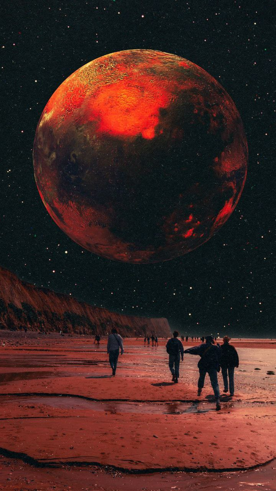
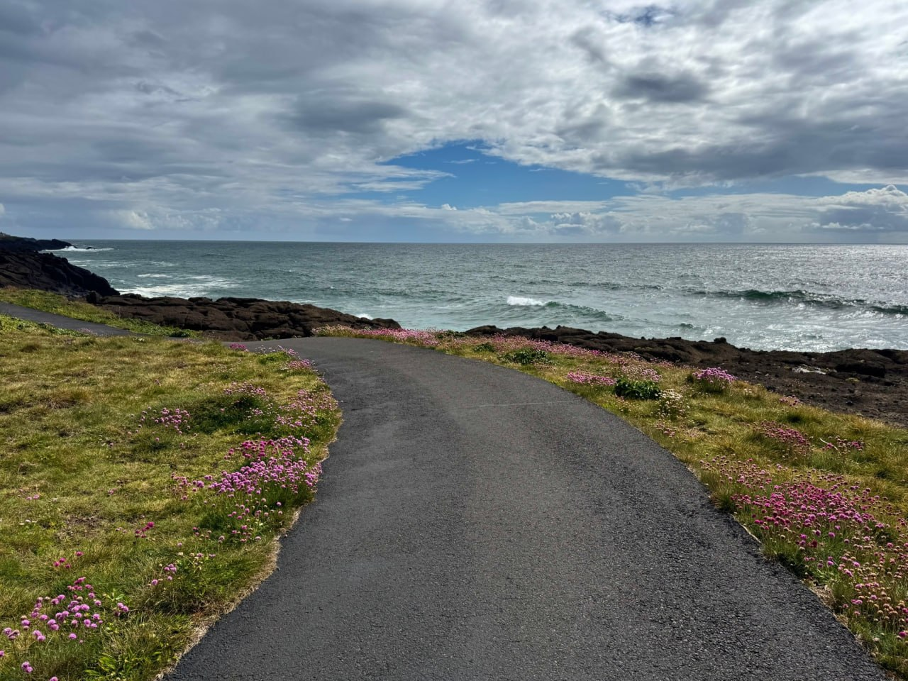
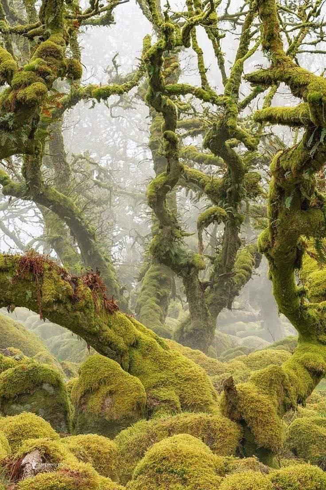
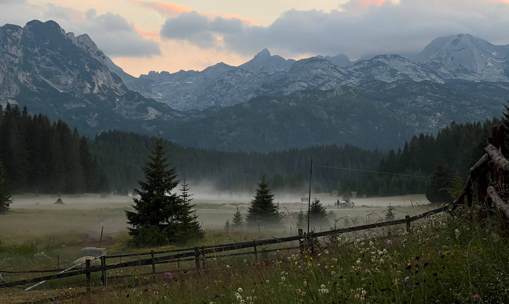
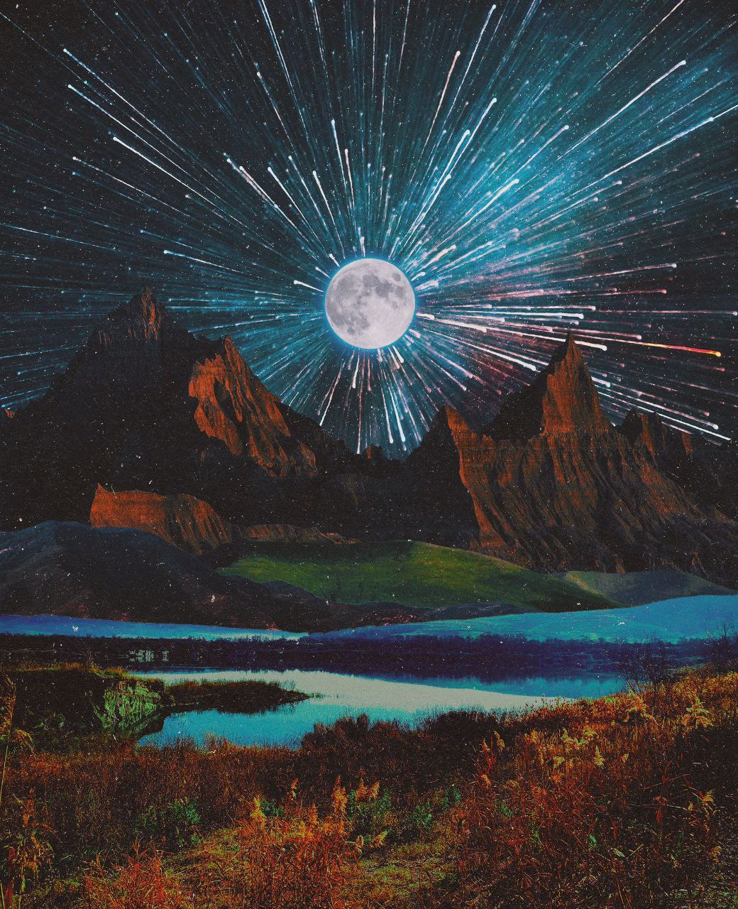

Маршрут 01 / фотографический этюд
Берег, который не торопится
Линия горизонта, глубина кадра и терпение. Корабль не требуется: маршрут начинается с умения остановиться.
Свет и композиция↗
Межгалактический учебный центр
фотографии и изобразительного искусства
Учимся видеть дальше объектива. Фотографируем невозможное, рисуем подозрительное и стараемся не потерять горизонт при выходе из гиперпространства.
Факультет подозрительного искусства принимает все формы жизни. Чувство юмора заменяет вступительный экзамен.


01 / ФАКУЛЬТЕТ ПОДОЗРИТЕЛЬНОГО ИСКУССТВА
Хороший кадр начинается не с новой камеры. Хороший рисунок — не с ещё одной кисти. Мы тренируем взгляд, разбираем свет и собираем истории из того, мимо чего обычно проходят.
А если за окном чужая планета — тем интереснее. Главное, не выдавать отсутствие замысла за «авторский метод».
Композиция, экспозиция, движение и портрет — камерой или телефоном.
Рисунок, коллаж и вымышленные миры, которым веришь с первого взгляда.
02 / АРХИВ МИРОВ
Фотографические этюды, иллюстрации и персонажный арт из полевого архива. У каждого изображения — свой тип, без выдуманных научных подписей.
03 / ЭКСПЕДИЦИИ
Три учебных маршрута — от спокойного света до сложной фактуры. Координаты вымышлены; задачи для глаза вполне настоящие.
Маршрут 01 / фотографический этюд
Линия горизонта, глубина кадра и терпение. Корабль не требуется: маршрут начинается с умения остановиться.

Маршрут 02 / фотографический этюд
Ищем ритм в ветвях и фактуру во мху. Если дерево заговорит — сначала проверьте запись звука.

Маршрут 03 / фотографический этюд
Работа с воздушной перспективой и тоном. Высота амбиций произвольная, горизонт желательно ровный.
Трое сопровождающих, ни одного скучного инструктажа. Все персонажи и их биографии вымышлены.
ФЛОТ ЭКСПЕДИЦИЙ
Комфорт, защита и запас оптимизма у каждого корабля свои. Сравните рейсы перед вылетом.

04 / ДИСПЕТЧЕРСКАЯ СТРАННЫХ ВЫЛЕТОВ
Иногда лучший способ найти собственный визуальный язык — отправиться туда, где правила ещё не согласовали. Творческое задание: вернуться с историей, а не с оправданием.
Перед вылетом убедитесь, что объектив смотрит наружу.
Открыть видеоархивКороткие передачи из полевого архива. Выберите запись: загружается только выбранный ролик, звук включается вручную.
05 / МАСТЕРСКИЕ
Программы вымышленного факультета. Полезные визуальные навыки — в неожиданной упаковке.
Учимся видеть свет, управлять выдержкой и не обвинять камеру в художественных решениях.
Свет, движение и постановка. Как собрать кадр, пока гости, букет и гравитация разошлись во мнениях.
Рисунок, коллаж и цвет. Похожесть необязательна, убедительность важна. Третьему глазу тоже найдём место.
Кредиты — условная валюта этой витрины. Формы показывают сценарий интереса к программе; настоящая запись и оплата не выполняются.
06 / КУРАТОРЫ
Вымышленные кураторы межгалактического факультета. Биографии — часть художественного мира, портреты — персонажный арт.
07 / БОРТОВОЙ ЖУРНАЛ
Вымышленные записи экспедиции. Сходство с реальными студентами объясняется устройством Вселенной.
ЗАПИСЬ / 01 · ПОСЛЕ ПОЛЕВОЙ ПРАКТИКИ
«Горизонт наконец ровный. Правда, теперь наклонена вся планета.»
Из журнала неизвестного стажёра
ЗАПИСЬ / 02 · МАСТЕРСКАЯ ПОРТРЕТА
«Попросили поймать живой взгляд. Поймали. Теперь он просит вернуть его домой.»
Наблюдение бортового ассистента
ЗАПИСЬ / 03 · ЦВЕТ И КОЛЛАЖ
«Работу приняли с первого раза. Комиссия ещё не вернулась из кадра.»
Документ без установленного автора
08 / ПЕРЕД ВЫЛЕТОМ
09 / СВЯЗЬ С ФАКУЛЬТЕТОМ
Расскажите, что хотите увидеть, нарисовать или неожиданно обнаружить в собственном кадре.
Это демонстрационная форма: введённый сигнал остаётся в текущем браузере и никуда не отправляется. Бортовая почта пока в теоретической стадии.